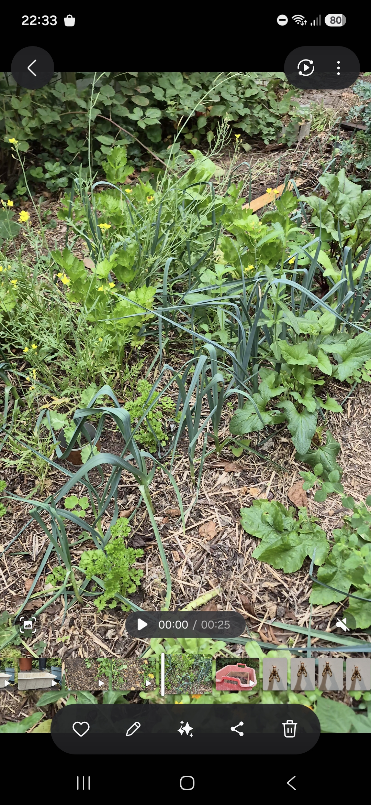
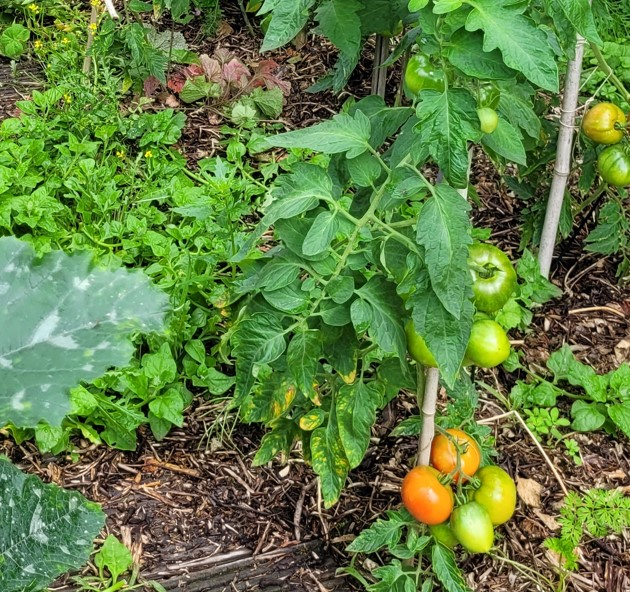
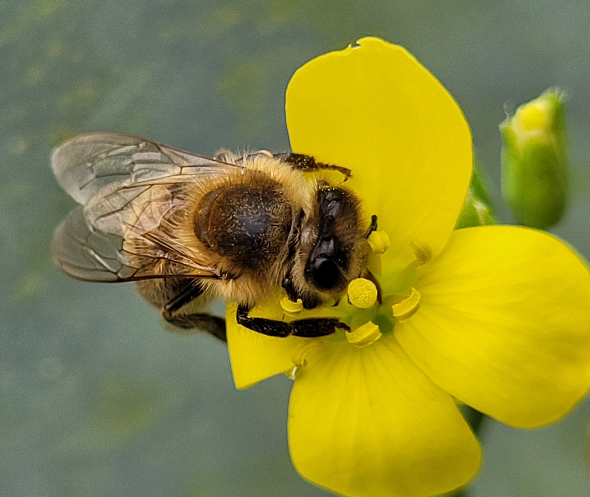
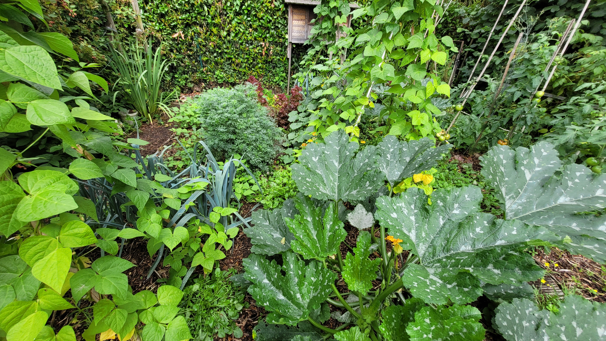

Chaostuinieren combineert ecologie, permacultuur en slimme planning tot een tuin die zichzelf helpt groeien zonder spitten.
→ wat is een chaostuin?De mooiste tuin is geen perfecte tuin. Het is een tuin die leeft. Waar planten elkaar versterken. Waar de bodem rijker wordt in plaats van uitgeput. Waar je niet controleert, maar samenwerkt.
Lees de filosofieElke tuin is anders. Elke bodem, elke situatie, elke tuinier. Chaostuinieren is geen recept, maar een verzameling technieken waaruit je kiest wat werkt voor jou.
Kies je aanpak


Hoe werkt chaostuinieren?
Ecologisch tuinieren betekent je tuin zien als een levend systeem. Bodem, planten en insecten werken samen.
Een moestuin is geen natuur. We grijpen in, oogsten en sturen bij. Dat kost energie. De vraag is: hoe doen we dat met de natuur mee, in plaats van ertegenin?
Chaostuinieren gaat daarin een stap verder. Niet met meer controle, maar met betere samenwerking. Je laat planten combineren, houdt de bodem bedekt, en gebruikt natuurlijke processen in je voordeel.
Alles vertrekt vanuit drie principes: sluit de kringlopen, voed de bodem en werk met diversiteit.
Kies je aanpakJouw tuin, jouw keuze
Er is niet één juiste manier om te tuinieren.
Elke tuin is anders. Elke bodem, elke situatie, elke tuinier.
Hier vind je een ganse menu om je tuin aan te pakken. Kies eruit wat bij jou past, combineer, en bouw stap voor stap je eigen chaostuin.
Kaart 1
De fundamenten. Dit bepaalt hoe je tuin zich ontwikkelt.
Werk niet tegen je bodem, maar bouw hem op. Zonder spitten, met aandacht voor structuur en leven.
Ontdek no-dig (niet spitten) en bodemopbouw →Wat groeit, keert terug. Afval bestaat niet in een gezonde tuin.
Lees hoe je kringlopen sluit →Bedek je bodem en laat de natuur het werk doen. Minder onkruid, meer leven, minder werk.
Waarom mulch werkt →Compost is meer dan voeding. Het is de basis voor een levende, luchtige bodem én een ideale start voor jonge planten.
Waarom compost werkt →Geen monocultuur, maar samenwerking. Planten helpen elkaar groeien en beschermen.
Combineren van groenten →Kaart 2
Hoe je je tuin fysiek organiseert.
Bescherm je bodem door er niet op te stappen.
Paden en stapstenen →Denk niet in vakken, maar in zones en beweging.
Hoe je je tuin indeelt →Niet alle planten moeten eetbaar zijn, mooi is ook goed.
Bloemen en kruiden →Vaste planten staan per definitie vast. Schik de rest er rond.
Vaste planten →Kaart 3
Wat je concreet doet, doorheen het seizoen.
Wanneer mulch aanbrengen, hoeveel, welk materiaal.
Hoe mulch gebruiken →Maak je eigen potgrond en voed tegelijk je tuin. Gebruik compost om te zaaien, op te kweken en je bodem te versterken.
Compost maken en gebruiken →Niet alles tegelijk. Werk met timing en spreiding.
Zaaien in een gemulchte tuin →Geef planten de juiste plek en buren.
Planten in een gemulchte tuin →Sommige planten hebben een duwtje in de rug nodig. Steunen, uitdunnen, opbinden of dieven: kleine ingrepen voor een gezondere oogst..
Je planten verzorgen →Oogst gespreid en hou je tuin in beweging.
Hoe oogsten →Kaart 4
Niet alles loopt perfect, en dat hoeft ook niet.
Geen vijanden, maar signalen. Zo herstel je het evenwicht.
Omgaan met plagen →Het weer heb je niet in hand. Wat je ermee doet wel.
Slecht weer? →Hen chaostuin is geen systeem dat je controleert, maar een systeem waarmee je samenwerkt
Bijsturen →Meer uit je tuin halen
Als het echt leuker mag zijn.
Als het echt leuker mag zijn.
Ontdek de werking van de composthoop door de ogen van Lientje.
De avonturen van Lientje →Geen regels om te volgen, maar principes om te begrijpen. Tien korte zinnen die je tuinwerk eenvoudiger maken.
Lees de 10 geboden →Verder kijken, aan de hand van enkele bedenkingen.
bekijk de lijst van onderwerpen →Muzikale beleving van de moestuin.

Interactieve tools
Eenvoudige tools om je tuin beter te plannen — alles werkt lokaal in je browser, zonder account of registratie.
Hoeveel mulch heb je nodig voor jouw tuin? Geef aan hoe je bodem er nu voor staat, wat je aan mulchmateriaal ter beschikking hebt en welk doel je voor ogen hebt — de calculator toont hoeveel mulch je daarvoor jaarlijks nodig hebt, en of dat haalbaar is met wat je nu hebt.
Teken eerst de indeling van je tuin: waar komen de vaste paden, waar de bedden — de basis van elke ecologische tuin, zo kom je nooit op je bodem te staan. Verdeel daarna je groenten over de bedden: het tool houdt rekening met bereikbaarheid en helpt je combinaties kiezen die elkaar versterken.
De samenvatting
Over de auteur
Al vele jaren tuinier, de laatste jaren zo volledig ecologisch mogelijk. Collega's en samentuin-vrienden vonden de aanpak interessant genoeg om de ideeën te verspreiden.
Dit platform is geen bijbel. Neem mee wat voor jou past, experimenteer, en ontdek wat werkt in jouw specifieke tuin. De natuur is de beste leraar.
e-mail: info@chaostuin.be instagram: chaostuin